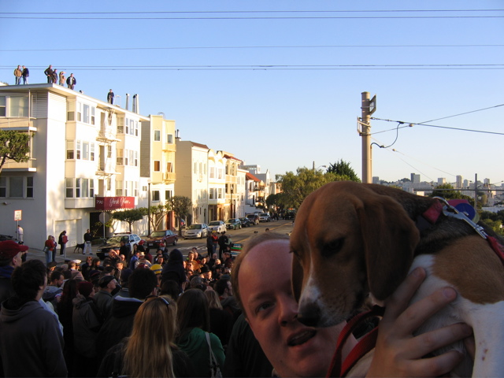

<--Previous Up Next-->

Commemoration at the Golden Hydrant
Not far from our home, at the southwest corner of Dolores Park, stands a gold-painted fire hydrant, the only hydrant in this part of the city which still had water after the earthquake. Firefighters made their last stand here and halted the fire's advance to the south, saving the neighborhood and probably our house. Every year on Quake Day, neighbors gather to reminisce and freshen the gold paint. This year, it being the centennial, the event was much bigger than usual, so Huxley watched from afar. He didn't mind -- he's painted many a hydrant gold before and since.
Locals will recognize Frank Chu's sign in the background behind Dave's head.